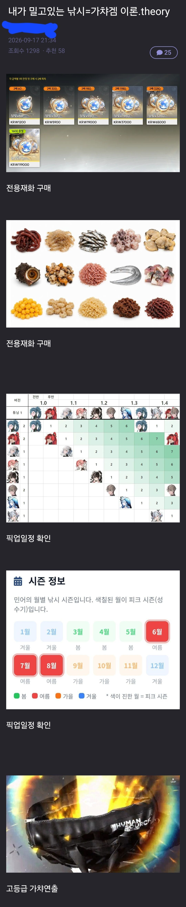
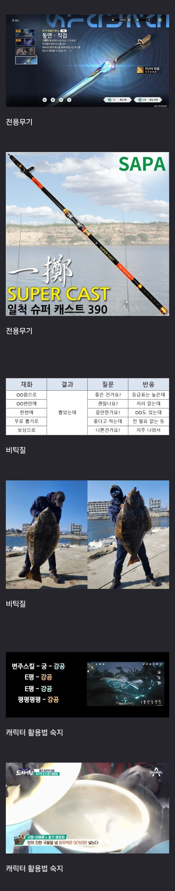

낚시 궁금한거 있는데
한강에서 낚시하는 사람들
진짜 먹을려고 하는거임?
민물고기를 먹는 사람은 거의 없음 한강에서 낚시하면 보통 배스 노리고 하는 건데 서양애들 스타일로 손질 잘해서 스테이크로 구워먹으면 맛있다는데 그거 먹는 사람은 본 적이 없고 보통은 어디 멀리 가기는 힘들고 하니까 그냥 어차피 안 잡힐 거 알면서 한강에 던져나 보는 거
이수근 한창 도시어부에서 쏘가리잡을때 한강서 잡던데
낚린이 어쩌다가 이거 낚았는데 귀한건가요?
평범한 가물치 사진 -> 천연기념물 검가물치(그런 물고기없음)입니다 신고했어요->글삭튀
복어독 20배의 날개쥐치 사진 -> 존나맛있고 귀한 물고기임 새꼬시 해먹으면 맛있음 ->이후 상황은 잘 모름
실제로 있었던일
이거 미필적고의에 의한 살인 성립인데ㄷㄷ
무료 GPT는 맛있는고기 유료 클로드도 맛있는 물고기래 씨발 ㅋㅋㅋ
빠진게 있네
'고독'
요즘 낚시 클럽 잘 되어있어서 딱히..???
그리고 낚시는 2명 다니는게 적당함
내 커다란 고추를 확인한 여자들의 기분
입질이 왔을때 오는 도파민이 있나봄
한없이 기다리다가 하나 걸려서 터질 때 그 뽕맛이 미쳤음 도박하는 사람들이 이런 이런 느낌으로 도박하는건가..? 싶어짐
낚시 글이 있어서 애써 로그인 했다.
1. 동해나 서해나 바다 물때가 맞아야 하고 낚시는 고기가 물어주는 것임.
2. 애써 주말에 낚시 가는 초보들에게 그 물때가 맞아주는건 너무 힘든 일임.
3. 현지인들도 아무때나 가서 고기 잡는것 아님.
4. 하지만 한번 손맛을 보면 또 헤어날 수 없는게 낚시임.
5. 그리고 고기가 있다고 던진다고 되는게 아님.
6. 채비를 직접 다룰수 있어야함. 쇼크리더 등등
7. 채비 어느정도 다루고 미끼도 판단하고 다룰 수 있으면 괜춘한데 이게 어려운 일임.
8. 최고의 아빠는 아들 데리고 낚시해서 고기 잡는 사람임.
9. 인생의 모든 취미는 낚시로 종료됨.
10. 낚시인이 다른 취미로 돌아가는 경우는 없음.
8은 정확히는 부부가 동시에 낚시에 빠져 사는거 아닌이상
낚시하러 간다하면 이래저래 사람취급 받기 어려우니 최소한의 남편노릇과 최소한의 부모노릇으로 보이려면
애들이라도 데려가서 집사람 쉬게 해야 나중에 애들 시켜서 고려장 안당한다 뭐 그런 느낌
낚시는 일단 취미가 깊이 들면 탈출 못 함 크게 다쳐도 다시 함 본인이 죽거나 가족이 죽어야 탈출함
근데 시간이나 장비나 정보나 때나 등등등등 이것저것 맞아 떨어져야 재미보기 때문에
걍 뭐 취미나 해볼까~ 하는 수준에서 낚시에 깊게 취미 들기가 쉽지 않음
유독 물고기에게는 자비가없는듯 ㅋㅋ
숨통붙잡고 살려고 발버둥치는걸 손맛이라니ㅠ

와 맞네
이건 천장도 없고 이월도 없는 똥겜이네요
바다낚시는 안해봐서 모르지만 민물낚시 도파민쩜. 나처럼 지방사는 애들은 집근처에도 던질 곳이 존재. 나도 걸어서 2-3분이면 하천 나옴
젠존제 하다가 미야비 약해지니까 잘 안하게 됌
단차돌리는데 수십분 걸리는 갓겜
아내 가능?
선상낚시 입문 시킬려면 쭈꾸미 낚시가 최고임 물론 13~2물 사이에 가는거 추천
유유자적, 평화로운 분위기, 느긋 뭐 이런거랑 하나도 안맞더라ㅋㅋ 계속 찌 보고 있어야 하고 반응 없으면 후딱 다시 던지면서 자리 찾아야 하고 낚시 한 번 갔다 오면 개피곤함.